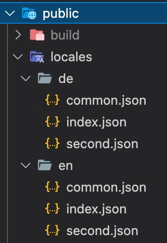

Let's talk about internationalization (i18n) for Remix...
When it comes to JavaScript localization, one of the most popular frameworks is i18next and one of the most famous Remix module for i18next is remix-i18next.
It was created in October 2021 by Sergio Xalambrí.
i18next was created in late 2011. It's older than most of the libraries you will use nowadays, including your main frontend technology (React, Angular, Vue, ...). ➡️ sustainable
Based on how long i18next already is available open source, there is no real i18n case that could not be solved with i18next. ➡️ mature
i18next can be used in any javascript (and a few non-javascript - .net, elm, iOS, android, ruby, ...) environment, with any UI framework, with any i18n format, ... the possibilities are endless. ➡️ extensible
There is a plenty of features and possibilities you'll get with i18next compared to other regular i18n frameworks. ➡️ rich
Here you can find more information about why i18next is special and how it works.
Let's get into it...
Prerequisites
Make sure you have Node.js and npm installed. It's best, if you have some experience with simple HTML, JavaScript and basic React and Remix, before jumping to remix-i18next.
Getting started
Take your own Remix project or use this example app here.
1 2 3 4
git clone -b start git@github.com:locize/locize-remix-i18next-example.git cd locize-remix-i18next-example npm i npm run dev
We are going to adapt the app to detect the language according to the user’s preference.
And we will create a language switcher to make the content change between different languages.
exportdefaultnew RemixI18Next({ detection: { // This is the list of languages your application supports supportedLanguages: i18nextOptions.supportedLngs, // This is the language you want to use in case the user language is not // listed above fallbackLanguage: i18nextOptions.fallbackLng, }, // This is the configuration for i18next used when translating messages server // side only i18next: { backend: { loadPath: resolve('./public/locales/{{lng}}/{{ns}}.json') }, }, // The backend you want to use to load the translations // Tip: You could pass `resources` to the `i18next` configuration and avoid // a backend here backend: Backend, })
Prepare some folders like this:

Now in your entry.client.jsx adapt the code like this:
// initialize i18next using initReactI18next and configuring it if (!i18next.isInitialized) // prevent i18next to be initialized multiple times i18next .use(initReactI18next) // Tell i18next to use the react-i18next plugin .use(LanguageDetector) // Setup a client-side language detector .use(Backend) // Setup your backend .init({ ...i18nextOptions, backend: { loadPath: '/locales/{{lng}}/{{ns}}.json' }, // This function detects the namespaces your routes rendered while SSR use // and pass them here to load the translations ns: getInitialNamespaces(), detection: { // Here only enable htmlTag detection, we'll detect the language only // server-side with remix-i18next, by using the `<html lang>` attribute // we can communicate to the client the language detected server-side order: ['htmlTag'], // Because we only use htmlTag, there's no reason to cache the language // on the browser, so we disable it caches: [], } }) .then(() => { // then hydrate your app wrapped in the I18nextProvider return hydrate( <I18nextProvideri18n={i18next}> <RemixBrowser /> </I18nextProvider>, document ) })
And in your entry.server.jsx adapt the code like this:
exportdefaultasyncfunctionhandleRequest( request, statusCode, headers, context ) { // First, we create a new instance of i18next so every request will have a // completely unique instance and not share any state const instance = createInstance()
// Then we could detect locale from the request const lng = await i18n.getLocale(request) // And here we detect what namespaces the routes about to render want to use const ns = i18n.getRouteNamespaces(context)
// First, we create a new instance of i18next so every request will have a // completely unique instance and not share any state. await instance .use(initReactI18next) // Tell our instance to use react-i18next .use(Backend) // Setup our backend.init({ .init({ ...i18nextOptions, // use the same configuration as in your client side. lng, // The locale we detected above ns, // The namespaces the routes about to render want to use backend: { loadPath: resolve("./public/locales/{{lng}}/{{ns}}.json"), } })
// Then you can render your app wrapped in the I18nextProvider as in the // entry.client file const markup = renderToString( <I18nextProvideri18n={instance}> <RemixServercontext={context}url={request.url} /> </I18nextProvider> );
exportconst loader = async ({ request }) => { const locale = await remixI18n.getLocale(request) const t = await remixI18n.getFixedT(request, 'common') const title = t('headTitle') return json({ locale, title }) }
exportconst handle = { // In the handle export, we could add a i18n key with namespaces our route // will need to load. This key can be a single string or an array of strings. i18n: ['common'] };
exportfunctionmeta({ data }) { return { title: data.title } }
exportdefaultfunctionApp() { const { i18n } = useTranslation() const { locale } = useLoaderData() // This hook will change the i18n instance language to the current locale // detected by the loader, this way, when we do something to change the // language, this locale will change and i18next will load the correct // translation files useChangeLanguage(locale)
We're ready to start to use the t function.
In your pages files, you can now use react-i18next to access the t function:
1 2 3 4 5 6 7 8 9 10 11 12 13 14 15 16 17 18
import { useTranslation } from'react-i18next'
exportconst handle = { // In the handle export, we could add a i18n key with namespaces our route // will need to load. This key can be a single string or an array of strings. i18n: ['index'] };
exportdefaultfunctionIndex() { const { t, ready, i18n } = useTranslation('index') if (!ready) return<Loading />// i18next may not be ready when changing route with <Link> return ( <> <div>{t('title')}</div> </> ) }
Add the keys to your translations, i.e. public/locales/en/index.json:
1 2 3
{ "title": "Welcome to Remix" }
You can do this for all your pages and components:
// Component using the Trans component functionMyComponent({ t }) { return ( <Transt={t}i18nKey="description.part1"> To get started, edit <code>src/App.js</code> and save to reload. </Trans> ) }
exportconst handle = { // In the handle export, we could add a i18n key with namespaces our route // will need to load. This key can be a single string or an array of strings. i18n: ['index'] };
exportdefaultfunctionIndex() { const { t, ready, i18n } = useTranslation('index') if (!ready) return<Loading />// i18next may not be ready when changing route with <Link>
This looks like the normal react-i18next usage.
Due to we're not using Suspense here, just make sure you check the ready flag before calling the t function. The translations will get lazy loaded as soon as you navigate on client side to another page.
We can also translate stuff like the page title.
Since remix-i18next can translate text inside loaders or actions, we can do this for example in our root.jsx:
exportconst loader = async ({ request }) => { const locale = await remixI18n.getLocale(request) const t = await remixI18n.getFixedT(request, 'common') const title = t('headTitle') return json({ locale, title }) }
exportconst handle = { // In the handle export, we could add a i18n key with namespaces our route // will need to load. This key can be a single string or an array of strings. i18n: ['common'] };
exportfunctionmeta({ data }) { return { title: data.title } }
exportdefaultfunctionApp() { const { i18n } = useTranslation() const { locale } = useLoaderData() // This hook will change the i18n instance language to the current locale // detected by the loader, this way, when we do something to change the // language, this locale will change and i18next will load the correct // translation files useChangeLanguage(locale)
exportconst handle = { // In the handle export, we could add a i18n key with namespaces our route // will need to load. This key can be a single string or an array of strings. i18n: ['index'] };
// Component using the Trans component functionMyComponent({ t }) { return ( <Transt={t}i18nKey="description.part1"> To get started, edit <code>src/App.js</code> and save to reload. </Trans> ) }
exportdefaultfunctionIndex() { const { lngs } = useLoaderData() const { t, ready, i18n } = useTranslation('index') if (!ready) return<Loading />// i18next may not be ready when changing route with <Link>
exportdefaultnew RemixI18Next({ detection: { // persist language selection in cookie cookie: i18nCookie, // This is the list of languages your application supports supportedLanguages: i18nextOptions.supportedLngs, // This is the language you want to use in case the user language is not // listed above fallbackLanguage: i18nextOptions.fallbackLng, }, // This is the configuration for i18next used when translating messages server // side only i18next: { backend: { loadPath: resolve('./public/locales/{{lng}}/{{ns}}.json') }, }, // The backend you want to use to load the translations // Tip: You could pass `resources` to the `i18next` configuration and avoid // a backend here backend: Backend, })
exportconst handle = { // In the handle export, we could add a i18n key with namespaces our route // will need to load. This key can be a single string or an array of strings. i18n: ['common'] };
exportfunctionmeta({ data }) { return { title: data.title } }
exportdefaultfunctionApp() { const { i18n } = useTranslation() const { locale } = useLoaderData() // This hook will change the i18n instance language to the current locale // detected by the loader, this way, when we do something to change the // language, this locale will change and i18next will load the correct // translation files useChangeLanguage(locale)
Use the locize sync command to synchronize your local repository (public/locales) with what is published on locize.
Alternatively, you can also use the locize download command to always download the published locize translations to your local repository (public/locales) before bundling your app.